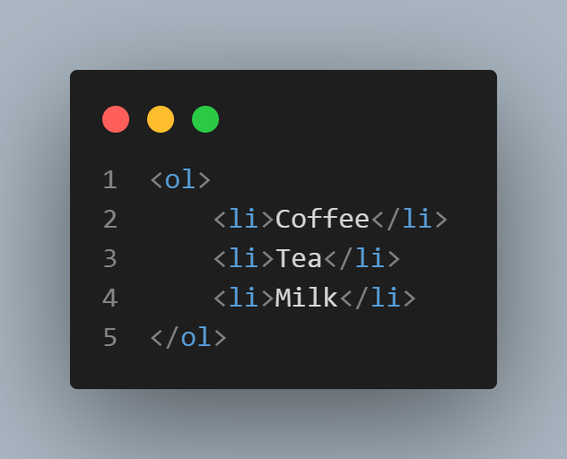
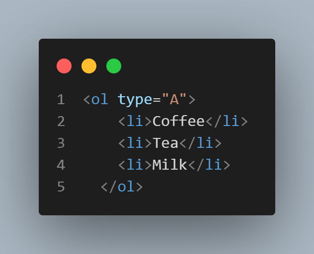
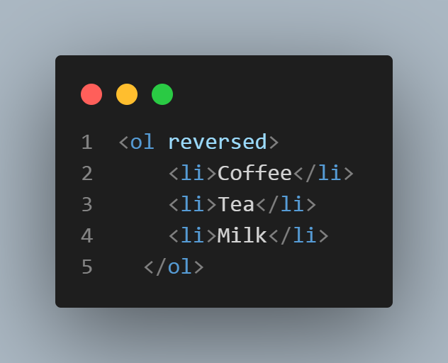
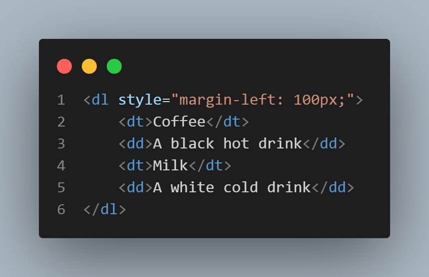

Semantic elements = elements with a meaning. HTML5 was built to be semantic, to attribute meaning to its content.
What are Semantic Elements?
A semantic element clearly describes its meaning to both the browser and the developer.
The opposite of that are the CSS styles, which give a form, a look to the content, like now.
Examples of non-semantic elements: div and span - Tell nothing about its content, they just select an area (to be worked by CSS or JS).
Examples of semantic elements: <form>, <table>, and <article> and many others. They clearly define their content.
But be careful where semantics meets logic:
Learn more at w3schools.
The <hr>* tag (hr stands for "horizontal rule". It makes an HORIZONTAL LINE). The the red line above here. It's originally black but I applied some style (=CSS) to it in the head area of the HTML basic structure (but here, in this paragraph, the colors/style were modified in the middle of the paragraph (the so called "inline CSS" explained above.), using <span> 3 times).
The br tag breaks a line like now
(for whatever reason you may have), without being a paragraph. (after the word "now" there is a <br> tag)
The <del> tag marks a text as non-valid or deleted.
The <ins> tag underlines the text to give the kind of enphasis s if he text has been filled in the blank space, or inserted.
Don't confuse this tag with the "u" one. "U" is not semantic. It just underlines and that's it, no meanings whatsoever.
This tag can be used in those small contract/agreement/purchase order/invoice letters.
The "big" tag is not used any longer. It works, thou. This task (enlarging) now is CSS business.
The superscript tag is good to format things like 1825+3, for instance.
The subscript tag doesn't make it rain but can make the H2O formula.
"An HTML entity is used to display invisible characters and reserved characters that would otherwise be interpreted as HTML code.
An HTML entity is a piece of text, or string, that begins with an ampersand ( & ) and ends with a semicolon ( ; ).
For instance, HTML will interpret the less-than sign ( < ) as a tag opening if you don't write it as an entity.
< entity makes <When I type the 3 characters above together (without scaping through an entity) they make this symbol: <
But if I want to show you the code that makes < I have to replace the & (ampersand) for its respactive entity, which is "&".
lt (LT in lowercase) means LESS THAN.
Always with a semicolon at the end.
> entity makes > The same as above applies here, with "gt" instead of that.
gt means GREATER THAN.
Always with a semicolon at the end, as well.
Emojis codes are a little more complicated to insert.
First go to a website like the one linked below and:
Through this link you to to a COMPLETE LIST of emojis and their codes.
And here we have some emojis coded the complicated (and only) way to code emojis:
Always be sure that you are not violating copyrights when pasting images made by someone else into your website.
There are royalty free images around the web, like:
Or
Or many others.
This canyon image is from Pixnio. Very easy. You don't even have to register in their website. And you have size options. You can even chose a personalized one with the width or height of your preference.
First, download the image to your "images" folder within your HTML project.
(If you're a beginner like me, going through Visual Studio Code tutorials is not a bad idea)
Then, in the VSCode editor: just type img and Emmet, the automatic assistant, will write the rest for you. After it's done, place the cursor in between the first pair of quotation marks (src="") of the "img" tag, press ctrl+spacebar and chose your image from your folder on the dialogue box.
The second pair of quotation marks (alt="") of the "img" tag are for you to write a quick description of the picture. It serves to appear in the screen in case the image doesn't load for any reason AND to be read out loud for those who wish the browser to do that.
Copying an image address from another website is an alternative way of adding an image to your page.
The disadvantage is that the image in your page will always depend on the existence of the original one and more: it must be exactly where it was when you copied the eddress. If their website crashes, your linked image crashes. If they change anything in the addres, the link is gone and so does the image.
Just right click any image of any website and choose "copy image address" (or whatever is closer to that). Then, paste it between the first pair of quotation marks (src="") of the "img" tag.
Again: The second pair of quotation marks (alt="") of the "img" tag are for you to write a quick description of the picture. It serves to appear in the screen in case the image doesn't load for any reason AND to be read out loud for those who wish the browser to do that.
This is an example (linked from G1.com):
/i.s3.glbimg.com/v1/AUTH_59edd422c0c84a879bd37670ae4f538a/internal_photos/bs/2022/8/c/wBz1OySaygj4v3cLRJTw/0102-cadeira-escritorio-ergonomia.jpg)
In a few words:
JPG (or JPEG) Is better if you want a big image with less weight, like this one:
PNG images are better if you want the picture itself to have a transparent background (and no picture frame), like these ones:


I've implemented a blue background (in a "div" "class" called "balls-hand" inside another div class called "blue" in the head sector of this HTML document) to make it easier to check the image's transparency and to align them.
Images from pngwing.com .
If you want to optimize the image, please use GIMP freeware (the "free photoshop") to "save for web" (a plugin) and automatically reduce a lot of the image's weight without loosing much quality.
"A favicon is a small icon or collection of icons associated with a website, web page, or web application. It's displayed within the browser tabs and bookmarks bar". Favicon.io
"A favicon is used to help users visually identify websites, web pages, and web applications within browser tabs, bookmarks, shortcuts, and address bars more easily. It's important to have a favicon for your website for brand recognition so that your users can easily identify your site in their browser tabs and bookmarks". Favicon.io
Examples of favicon:

"The most common favicon formats are ICO, PNG, and SVG, but there are additional formats for specific browsers or devices. The ICO file format was developed by Microsoft and is the original file format for the favicon. The format is unique because it allows for multiple small images within the same file. This is advantageous because the small icons required for a favicon in ICO format (16x16, 32x32, and 48x48 pixels) can be scaled and optimized independently. At small dimensions you can't rely on the browser to automatically resize your icon in an optimal way. The ICO format is supported by all browsers and it's the only format that IE5 through IE10 supports". Favicon.io
"The PNG format is a nice format because it's a format that most people are used to and doesn't require any special tools to create. With modern screens being high resolution the original problem of small icon dimensions for small resolutions no longer exists. For browsers that support the PNG favicon format oftentimes the quality of the favicon displayed within the browser tab or bookmarks bar will be higher than the ICO format. The disadvantage of the PNG format is that it's not compatible with IE5 through IE10". Favicon.io
"The SVG format has benefits over the PNG and ICO formats, but doesn't have great browser support yet. SVG files (Scalable Vector Graphics) are very lightweight and, being a "vector" graphic, they are infinitely scalable. This means that image quality is superb without sacrificing load times for heavy images. Only Chrome, Firefox, and Opera support SVG format favicons". Favicon.io
In the head area of the HTML code you type link. One of the Emmet Abbreviations the assistant will suggest says link : favicon.
Delete whatever comes written in the "href" quotation marks and press ctrl+enter to choose your own favicon image from your project's folder (all this in the Visual Studio Code, of course).
And don't change anytinng else in this code line given by Emmet. (Those colors here are some "span" + "style" testing.)
Here I make a bold word using the <strong> tag.
Better NEVER use the tag <b> to make bold. It's not semantic. This tag should be used to markup text as bold without conveying any extra importance, for example in article abstracts, where the beginning of an article is set in bold text
.
(quackit.com).
And here's an italic word made with the <em> tag.
Avoid using the tag <i> for italic. It's not a much appropriate semantic element.
To put any lenght of text (from a single letter to a group of paragraphs) inside a tag:
Just press Ctrl + shift + p then find "wrap with abbreviation", select it with enter and type only the letters that represent the tag you want. Only the letters, without the < and > signs. And enter to finalize. Ready! It's wrapped. The next times you do that, just press ctrl+shift+p and the option will already be there in the recent history and you proceed with the rest of the instructions above.
The <mark> tag makes the above <h1> heading (which I had "styled" to green) return to its original color, black.
If you want it to continue the green CSS style I have defined for all <h1> tags you have to force it by applying an INLINE CSS to the <mark> tag opening as follows:
And if the yellow mark doesn't match your overall background-color, just do the same as above adding a background-color to the mark's opening tag style. See:
Mark the text. Don't mark bobeira!
<code> tag:
The code tag above is between the <code> tags, which turns the fonts into "monospaced". The black background and the green font color are CSS styles I have added. The same happens with the open and close tag symbols, which I added through the "HTML entities" we will see in the next topic.
A monospaced font, also called a fixed-pitch, fixed-width, or non-proportional font, is a font whose letters and characters each occupy the same amount of horizontal space. This contrasts with variable-width fonts, where the letters and spacings have different widths. Check the comparison below.
(From Wikipedia).
If you just put a JS code snippet into a <code> tag it does not replicate the line breaks and the identing, like the example below:
matches.forEach(function(match) {
match.parentNode.removeChild(match);
});
It's just rendered as monospaced font (and - in this particular case - plus the black and green CSS I applied to all the code tags).
<pre> tag:
So if you really want it to be displayed like the real code in the editor you must apply the <code> tag inside the <pre> tag (check the source).
This tag also displays the text as it is formated at the origin, or PRE-formated (hence the name of the tag).
And it renders code as follows:
matches.forEach(function(match) {
match.parentNode.removeChild(match);
});
Important remarks:
Please, pay attention where it mentions the HTML entities.
What is  ?
?
(This is the old logo. The MDN logo has changed as from March 1, 2022 - I coudn't get any to show here. And now I discovered that I didn't get any because so far there's none "ready made": The new logo is built from CSS traces, not a png or jpg image.).
OPS! Just after writing this (on March 3/2022) I found a png one at Wikipedia, and here it is:
The HTML element represents preformatted text which is to be presented exactly as written in the HTML file (*!!!). The text is typically rendered using a non-proportional, or monospaced, font. Whitespace inside this element is displayed as written. Check it at MDN
*!!! Be careful !!! - It's not quite like that, as the very site continues:
If you have to display reserved characters such as
<, >, & and " within the <pre> tag, they must be escaped using their respective HTML entity.
IN OTHER WORDS, YOU MUST CANCELL THE HTML "CODE EFFECT" OF THOSE SYMBOLS (when displaying code) AS FOLLOWS:
Now let's review and see where they fit:
Entities are used to return / display special symbols.
"An HTML entity is used to display invisible and reserved characters that would otherwise be interpreted as HTML code.
n HTML entity is a piece of text, or string, that begins with an ampersand ( & ) and ends with a semicolon ( ; )./p>
For instance, HTML will interpret the less-than
sign ( < ) as a tag opening if you don't write it as an entity.
< entity makes <When I type the 3 characters above together (without scaping through an entity) they make this symbol: <
But if I want to show you the code that makes < I have to replace the & (ampersand) for its respactive entity, which is "&".
lt (LT in lowercase) means LESS THAN.
Always with a semicolon at the end.
> entity makes > The same as above applies here, with "gt" instead of that.
<q> tag
I could use the keyboard to put a text "between quotation marks", like I did now.
But it would not be semantic.
A small review about semantics:
A semantic element clearly describes its meaning to both the browser and the developer
Examples of non-semantic elements: <div> and <span> - Tell nothing about its content. They just select an area (to be worked by CSS or JS)
Examples of semantic elements: <form>, <table>, and <article> - Clearly defines its content.
<cite> tag
The <cite> attribute is not displayed in the screen. Its purpose is to orient SEO... And most of all it specifies a URL to a document that explains:
<blockquote> (see below), or<q>(see below), or<ins> (check the ins tag above), or<del> (check the del tag above), containing a URL to a document that explains the deletion .<blockquote> tag
The HTML <blockquote> element defines a section that is quoted from another source.
Browsers usually indent <blockquote> elements and that's it. No quotation marks, no italic. Look:
Here is a quote from WWF's website:
For 50 years, WWF has been protecting the future of nature...
WWF works in 100 countries...
See how the code gets:
<abbr> tag
The <abbr> tag defines an abbreviation or an acronym, like "HTML", "CSS", "Mr.", "Dr.", "ASAP", "ATM".
In VSCode, Emmet brings it to us already with the global <title> attribute to show the description for the abbreviation/acronym when you mouse over the element. Example:
If you pass the mouse pointer over the HTML abbreviation you will see its meaning.
An ordered list starts with the <ol> tag. Each list item starts with the <li> tag.
Example:
The code looks like that:
This screenshot was obtained by VSCode's CodeSnap extention I have just installed.
Once you start typing the word "type", Emmet gives you the hints:

1.1.1) type="1" The list items will be numbered with numbers (default)
Example:
1.1.2) type="A" The list items will be numbered with uppercase letters
Example:
A syntax example taken from Type A:
1.1.3) type="a" The list items will be numbered with lowercase letters
Example:
1.1.4) type="I" The list items will be numbered with uppercase roman numbers
Examnple:
1.1.5) type="i" The list items will be numbered with lowercase roman numbers
Examnple:
start attribute:The code stays this way:

The reversed attribute is a boolean attribute. When present, it specifies that the list order should be descending (9,8,7...), instead of ascending (1, 2, 3...).
Example:
Syntax example:
The HTML <ul> tag defines an unordered (bulleted) list. (Same syntax as <ol>).
Example:
See how the nested list code is:

Just to show the feature I set the start of the "new ones" to "5", meaning the 5th letter of the sequence.
And I invented "Fort1" and "Fort2" just to show you that the unordered nesting cause a progressive indentation. Like the fruits in "nested lists 1" above.
A description list is a list of terms, with a description of each term.
The <dl> tag defines the description list
The <dt> tag defines the term (name)
And the <dd> tag describes each term:
Example (I've set a 100px margin left to indent the whole example):
Syntax example:

Note that the example is not indented because the code is indented. It's because of the 100px margin I have set.
"Links are found in nearly all web pages. Links allow users to click their way from page to page". (w3schools)
More than that, the <a> HTML anchor element, with its href attribute, can create hyperlinks to:
MUCH more can be said about links and the <a> tag and you may read it at MDN Web Docs, but here we will stick to the following:
This kind of link is made to an absolute URL (includes the "https://www" part). Example:
You can access my public repository at Github by clicking here.
The HTML element:
<a href=""></a>
a means anchor and href means hypertext reference.
<a href="the URL comes here">and the text that will become hyperlink comes here</a>
As you can see in the code below, there are a "target" and a "rel" attributes, meaning:
Check the code:

This kind of link is made to a relative URL (without the "https://www" part).
Just click here to go there.
And here you go to a page stored in the "new-folder".
a) First, you use an id to give an unique name to the destination point of the future link.

b) And soon after that you make the link through the usual <a> tag, pointing the hypertext reference (href) to the id through a # plus the name of the id.
From here you can download a PDF book from Curso Em Vídeo about the Internet History.
This helps to improve performance across different devices. Responsive images are just one part of responsive design, a future CSS topic for us to learn.
We will learn how to use features like srcset and the <picture> element to implement responsive image solutions on websites.
After applying the HTML elements below, open this page in different devices such as a PC, a tablet or a cell phone to see the magic working. If you don't have several devices in hand, just gradually shorten/enlarge the size of your browser.

You can check the details of this feature at MDN Web Docs.
There are two ways of inserting audio into your page:
<audio> tag.<audio> plus <source> tags.<audio> tagThis is "Dubstep", from Bensound:

<audio> plus <source> tags
The <source> element allows you to specify alternative audio files which the browser may choose from. The browser will use the first recognized format.
And here you have "Funkyelement", also from Bensound:
Suppose I had an alternative "ogg" oudio format for this song (which I don't, as you will see in the code. I just staged the snippet to print the image as an example). I would put it just below my main option, which now is the "mp3". If your browser for any reason would not recognize the mp3 file, it would automatically play the ogg one.

<video>; element.Before anything, be careful! Using this element to embed videos may cause a heavy increase of traffic costs to your website. Read more at Wave.video
To show a video in HTML, use the <video> element:
Example

The controls attribute adds video controls, like play, pause, and volume.
The poster attribute shows a cover for the video before the first frame.
The <div class="entity"> puts the video inside a purple box. It's a CSS style I've used some times in this page.
"It is a good idea to always include width and (I would say OR) height attributes. If height and width are not set, the page might flicker while the video loads". (w3schools)
Anyway, I have set here ONLY the width (at 30%) to avoid disturbing the original width x height proportion. The snippet image above is just an example copied from w3schools and placed in my code for some minutes. And I have no "ogg" video file either.
The <source> element allows you to specify alternative video files which the browser may choose from. The browser will use the first recognized format.
The text between the <video> and </video> tags ("Your browser does not support the video tag.") will only be displayed in browsers that do not support the <video> element.
To start a video automatically when the page is loaded, use the autoplay attribute after the width and height parameters, instead of "controls
Note: Chromium browsers do not allow autoplay in most cases. However, muted autoplay is always allowed.
You can also add the loop attribute o the video element to keep the video running again and again.
For complete detais about the video element, check MDN Web Docs.
Video from:"https://www.pexels.com/pt-br/video/asfalto-barco-bote-canal-5380467/" Author: Rulo Davila, at Pexels
Poster picture: Photo by Bicanski at Pixnio.
Teacher Guanabara advices us to use Handbrake video transcoder app to make different versions of our video, but the app doesn't run in my 8.1 Windows. So I'll pretend I have an OGV video just to give you an example of how the code gets.
The basic HTML structure for embedding videos is:
<iframe src=”URL’></iframe>
This snippet of code helps display the video on your website. It pulls the video from its original source, without actually “forcing” you to host it on your website. This implies that you won't have to worry that a video will affect your website load time, and it also opens up an array of choices between various video hosting services that best suit your needs.
In a few words, it improves your SEO rating. And if you embed a video from your own YouTube channel it HIGHLY improves your SEO rating, as Guanabara says in the video below.
One simple way of embedding a video is from YouTube:
Here's a video embeded this way:
Read more about it at w3schools.
An inline style may be used to apply a unique style for a single element. To use inline styles, add the style attribute to the relevant element (h1, h2, p, span, div, etc.). The style attribute can contain any CSS property.
Example:
This is a paragraph.
This is the code for the given example:

The disadvantage of this method is that you have to repeat the style in every element of the website, one by one.
The advantage is that it personalizes a given element.